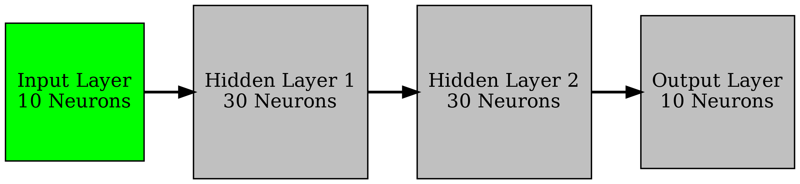

Tackling Hard Tasks with BNNs
Introduction
In this previous article I presented some methods for a first stab at applying "biological neural networks" (BNNs) to a common neuronal machine learning dataset, Neural Latents Benchmark (NLB). I had finished a prior paper focused on training BNNs on the very simple MNIST benchmark using direct automatic differentiation based gradient descent in pytorch. Ultimately, I found that more sophisticated methods for training BNNs were needed to solve the more complex NLB task.
In this article I developed a number of new approaches for training BNNs in more complex cases. For example, I found that autodiff failed as a tool for training when we consider more complex neuron models, networks of neurons with recurrences, or in cases where long timeframes are needed. In this article, I developed a number of novel techniques that can be extended out of the context of BNNs. These techniques aim at computing a "weak gradient" in situations where the autodiff gradient is invalid (e.g. when the loss landscape is discontinuous). The aim of this "weak gradient" is to suppress discontinuities at the local scale within the loss structure and capture the trend of the loss curve. Two main approaches were considered: fitting a linear regression by using random sampling in a neighborhood and using the inferred linear slope as the gradient, and "mollifying" (or smoothing) the loss landscape and then computing gradients. It was found that in both cases we can essentially treat the network as a "black box" which we sample from but never need to backpropogate through. This has the added advantage that in cases where the transfer functions we use have no clear notion of derivative (e.g. binary neurons, leaky integrate and fire, stochastic neurons, etc), we can still train without having to come up with some approximate derivative for autodiff, which is the approach commonly used in the literature.
First Steps

As a first pass, I will work on replicating a synthetically generated spiketrain with 10 neuron cells using a BNN. Essentially, we feed the spiketrain into the network and hope for the BNN to replicate it. A proposed simple architecture for this task is given above. I will use the regression method proposed in the previous article to try and train. Note that the max number of parameters between layers is 30*30 = 900. Thus, I will set the number of samples, \(S\), to 900 and alternate between layers each batch for training, so after each four batches we have modified the entire network.
Here is a summary table of the setup:
| Parameter | Value |
| Gradient Method | Regression Sampling |
| \(S\) | 900 |
| Architecture | 10 x 30 x 30 x 10 |
| Simulation Timeframe | TBD |
| \(dt\) | 0.1 ms |
| Synapse type | TBD |
Useful References
Todo
- Train to higher accuracy on MNIST on cluster
- Try gradient clipping with autodiff so we can compare autodiff to regression in accuracy plots
- Look for cases where BNN/SNN fail with autodiff
- Work more on NLB and write up initial results
- Look for more SNN applications